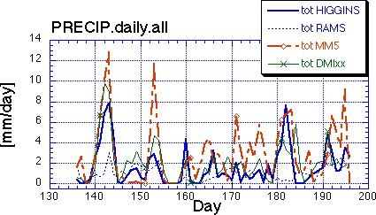
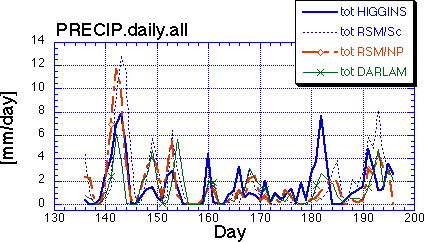
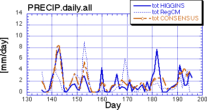

Daily Precipitation
Curves show the daily total precipitation by each model
listed in the key for the "Upper Mississippi" domain (37N-47N;
89W-99W). "Consensus" in the third panel is an average of all the
model outputs.
[Higgins = gridded observations; RSM/NP = NCEP RSM; RSM/Sc = Scripps RSM]


